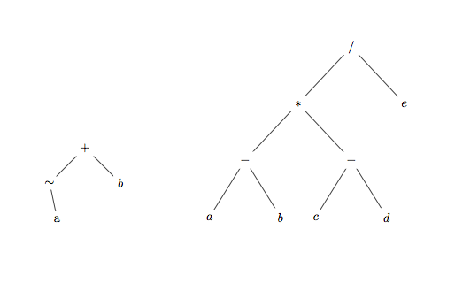

O objetvo desta tarefa é estender a tarefa 05 para que a análise sintática de uma expressão infixa produza uma árvore binária que a representa, conforme explicado em aula. Por exemplo, as expressões "-a+b" e "(a-b)*(c-d)/e" devem produzir as árvores:

O programa principal, análogo ao da tarefa 05, recebe como entrada uma série de expressões na forma infixa, uma por linha. Linhas de comentário devem ser precedidas por # na primeira posição. A saída do programa, para cada expressão, deverá produzir duas linhas: a expressão dada na forma pré-fixa e na forma pós-fixa. Devem ser implementadas, portanto, duas funções (ArvPre e ArvPos) que produzem as representações desejadas através de percurso recursivo das árvores. No caso dos exemplos acima, a saída completa deveria ser:
Infixa: -a+b Prefixa: +~ab Posfixa: a~b+ Infixa: (a-b)*(c-d)/e Prefixa: /*-ab-cde Posfixa: ab-cd-*e/
Além disto, o espaço ocupado pelas árvores binárias deve ser desalocado através da implementação de mais uma função denominada LiberaArv que será invocada dentro do programa principal.
O tratamento de erros é idêntico ao da tarefa 05.
A cadeia de entrada pode conter caracteres em branco.
O pacote tudo.zip contém todos os testes abertos e os seus resultados, bem como os arquivos principal.c, balloc.h, balloc.c, imprimearvore.c, imprimearvore.h, analisador.h e analisador.c: uma versão incompleta do arquivo analisador.c que deve ser completado.
/e /b / + /d /a /- \~ \c \* /b \- \a(Note-se que o caractere "/" é usado para representar tanto o apontador para a subárvore direita quanto o operador de divisão.) Esta função foi definida através de chamada de uma função mais geral declarada nos arquivos imprimearvore.c e imprimearvore.h.
A chamada da função despejaArv pode ser utilizada para depurar as funções do seu programa: basta remover os delimitadores de comentário na sua chamada.
Deve ser submetido apenas o arquivo analisador.c.
Não é permitido alterar o arquivo de interface analisador.h.
Devem ser utilizadas as macros MALLOC e FREE fornecidas com o pacote balloc. A sua implementação não pode utilizar as operações habituais de alocação.
O número máximo de submissões é 10.